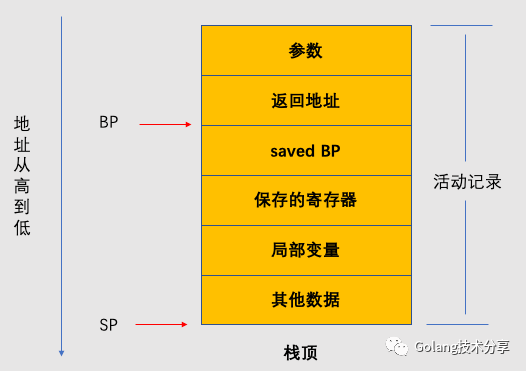
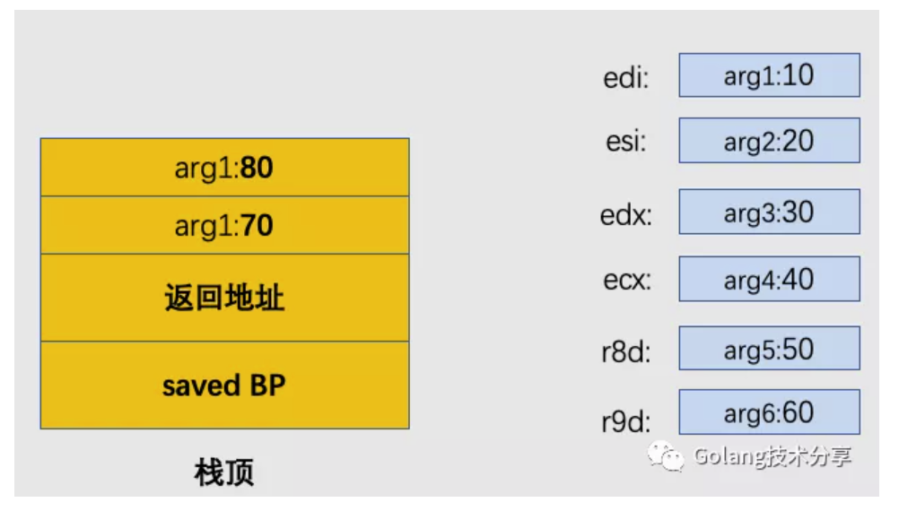
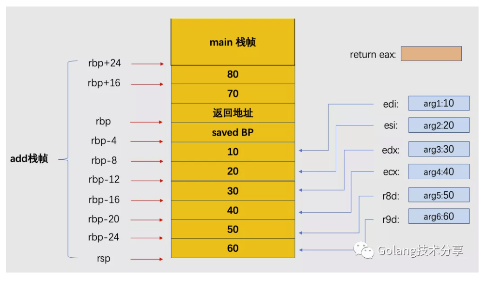
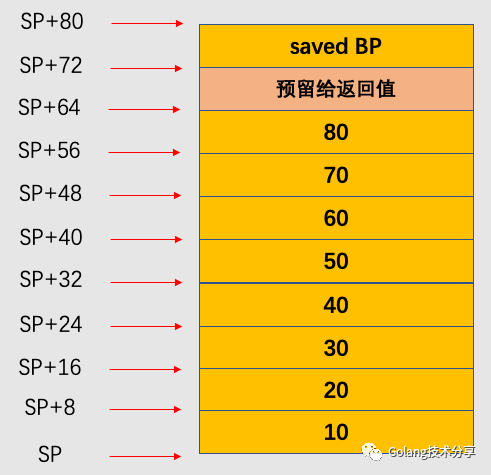
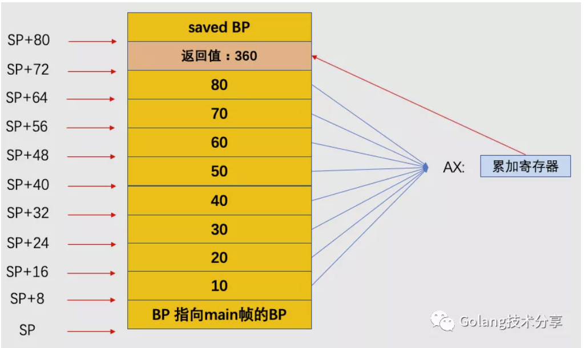

Go函数调用惯例
本文旨在探讨Go函数中的一个问题：为什么Go函数能支持多参数返回，而C/C++、java不行？这其实牵涉到了一个叫做函数调用惯例的问题。
调用惯例
在程序代码中，函数提供了最小功能单元，程序执行实际上就是函数间相互调用的过程。在调用时，函数调用方和被调用方必须遵守某种约定，它们的理解要一致，该约定就被称为函数调用惯例。
函数调用惯例往往由编译器来规定，本文主要关心两个点：
函数的参数（入参与出参）是通过栈还是寄存器传递？
如果通过栈传递，是从左至右，还是从右至左入栈？
栈是现代计算机程序里最为重要的概念之一，没有栈就没有函数，也没有局部变量。栈保存了一个函数调用所需要的维护信息，这常常被称为堆栈帧(Stack Frame)或活动记录 (Activate Record)。堆栈帧一般包括如下几方面内容：
- 函数的返回地址和参数。
- 临时变量:包括函数的非静态局部变量以及编译器自动生成的其他临时变量。
- 保存的上下文信息:包括在函数调用前后需要保持不变的寄存器。
一个堆栈帧可以用指向栈顶的栈指针寄存器SP与维护当前栈帧的基准地址的基准指针寄存器BP来表示。因此，一个典型的函数活动记录可以表示为如下

在参数及其之后的数据即当前函数的活动记录。BP固定在图中所示的位置（通过它便于索引参数与变量等），它不会随着函数的执行而变化。而SP始终指向栈顶，随着函数的执行，SP会不断变化。在BP之前是该函数的返回地址，在32位机器表示为BP+4，64位机器表示为BP+8，再往前就是压入栈中的参数。BP所直接指向的数据是调用该函数前BP的值，这样在函数返回的时候，BP可以通过读取这个值恢复到调用前的值。
下面，我们来对比分析C和Go调用惯例差异。
- C调用惯例
假设有main.c的C程序源文件，其中main函数调用add函数，详细代码如下。
1 | 1// main.c |
我们通过clang编译器在x86_64平台上进行编译。
1 | 1$ clang -v |
main.c 编译后得到的汇编代码如下
1 | 1 $ clang -S main.c |
因此，在main函数调用add函数之前，其参数存放如下图所示

调用add函数后的数据存放如下图所示

因此，对于默认的C语言调用惯例（cdecl调用惯例），我们可以得出以下结论
- 当函数参数不超过六个时，其参数会按照顺序分别使用 edi、esi、edx、ecx、r8d 和 r9d 六个寄存器进行传递；
- 当参数超过六个，那么超过的参数会使用栈传递，函数的参数会以从右到左的顺序依次入栈
C语言函数的返回值是通过寄存器传递完成的，不过根据返回值的大小，有以下三种情况。
- 小于4字节，返回值存入eax寄存器，由函数调用方读取eax的值
- 返回值5到8字节，采用eax和edx寄存器联合返回
- 大于8个字节，首先在栈上额外开辟一部分空间temp，将temp对象的地址做为隐藏参数入栈。函数返回时将数据拷贝给temp对象，并将temp对象的地址用寄存器eax传出。调用方从eax指向的temp对象拷贝内容。
可以看到，由于采用了寄存器传递返回值的设计，C语言的返回值只能有一个，这里回答了C为什么不能实现函数多值返回。
- Go函数调用惯例
假设有main.go的Go程序源文件，和C中例子一样，其中main函数调用add函数，详细代码如下。
1 | 1package main |
使用go tool compile -S -N -l main.go 命令编译得到如下汇编代码
1 | 1"".main STEXT size=122 args=0x0 locals=0x50 |
同样的，我们将main函数调用add函数时，其参数存放可视化出来如下所示

这里我们可以看到，add函数的入参压栈顺序和C一样，都是从右至左，即最后一个参数在靠近栈底方向的SP+56~SP+64，而第一个参数是在栈顶SP~SP+8。
调用add函数后的数据存放如下图所示

注意，这里与C中调用不同的是，由于通过栈传递参数，所以并不需要将寄存器中保存的参数再拷贝至栈上。在本例中，add帧直接调用main帧栈上的数据进行计算即可。通过将结果累加到AX寄存器上，最后再将最终的返回值置回栈中即可，返回值的位置是在最后一个入参之上。
因此我们知道，Go函数的出入参均是通过栈来传递的。所以，如果想返回多值，那么仅需要在栈上多分配一些内存即可。到这里也就回答了文章开头的问题。
总结
在函数调用惯例中，C语言和Go语言选择了不同的实现方式。C语言同时使用了寄存器与栈传递参数，而Go语言除了在函数计算过程中会临时使用例如AX这种累加寄存器之外，全部是通过栈完成参数的传递。
任何选择都会有它的优劣所在，总体来讲，C语言实现方式更多地是考虑性能，Go语言实现方式更多地是考虑复杂度。下面，我们详细比较一下两种调用惯例。
C语言方式
CPU访问寄存器的效率会明显高于栈；
不同平台的寄存器存在差异，需要为每种架构设定对应的寄存器传递规则；
参数过多时，需要同时使用寄存器与栈传递，增加了实现复杂度，且此时函数调用性能和Go语言方式差别不再大；
只能支持一个返回值。
Go语言方式
遵循Go语言的跨平台编译理念：都是通过栈传递，因此不用担心架构不同带来的寄存器差异；
参数较少的情况下，函数调用性能会比C语言方式低；
编译器易于维护；
可以支持多返回值。